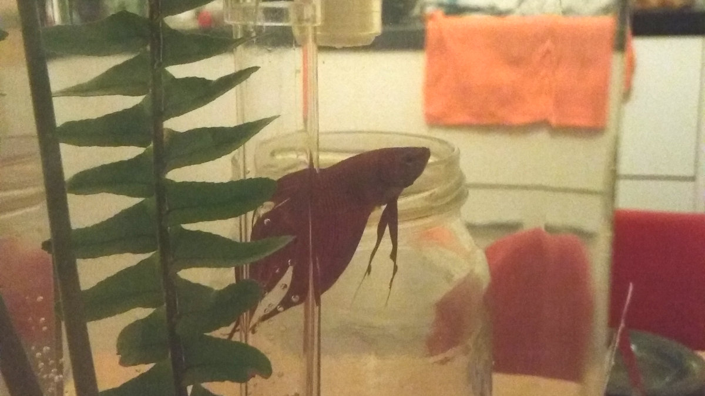

My pet fish
When I was 10 years old, my parents bought me a Siamese Fighting fish. I had it for five months and one day, we left the jar in direct sunlight and unfortunately it died.
Last Sunday, I bought myself a Siamese Fighting fish again. As I am planning to stay at my new place that I'm in for a long time and I thought it would be a perfect opportunity to have a pet fish which is easy to maintain.
I've been dribbling about the idea of having an aquarium for a few months now. I researched online and I bought a My Self Cleaning Tank Jar, which is a tank when water is poured from the top, the dirty water at the bottom gets pushed out through a nozzle. It has mixed reviews on the internet - some praising it's ingenious design whilst others horrified by the lack of space. Nevertheless, I thought I might give it a go so I bought this on ebay and it arrived and I set it up. I went to Marrickville Aquarium store and I bought a Siamese Fighting fish along with water conditioner and fish food. I took it home, floated the fish bag for an hour and released it into my tank. I went to my garden, picked some plants and just put it into the tank for some decoration.
I named it Finn.
I've had Finn for a week now and I am constantly fascinated by it. I have it next to my desktop and I watch it intensely. I watch it swim, interact with its surrounding. It's funny because the day after I bought my fish, I had to go back to my parents home for the night and I was constantly worried for my fish whether it would have jumped out.
Finn, thanks for keeping me happy and I hope that I'll make you happy too.
Edit
My fish got stuck under a rock and it died.. I'm sorry Finn.